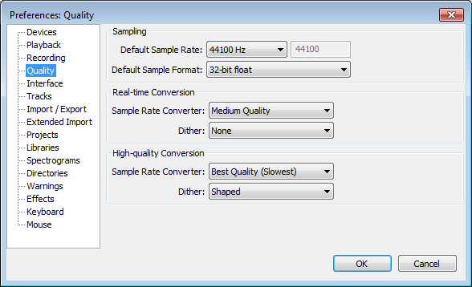

Quality Preferences
From Audacity Manual
- Accessed by: (on a Mac
- 
- Click on any of the other Preferences sections in the above image to go directly to that Preferences page.
Sampling
This panel sets the Default Sample Rate and Default Sample Format (bit depth) which will be used each time Audacity is launched, or each time a new project window or track is opened.
- Default Sample Rate: Offers a choice of 13 sample rates. Generally you will want to use the default value of 44100 Hz. 44100 Hz can reproduce all frequencies that humans can hear (up to 22050 Hz) and is the standard for audio CDs. To choose some other rate, click "Other..." in the dropdown and type your rate into the box to right of the dropdown.
Sample rates between 44100 Hz and 96000 Hz can produce higher quality but the quality benefits are increasingly small compared to rapidly increasing consumption of disk space and increasing risk of recording dropouts on slower computers. 192000 Hz music recordings could have ultrasonic playback distortion that make them inferior to recordings at lower rates. See "24/192 Music Downloads are Very Silly Indeed" for a technical discussion of the issues involved. Very high rates do have some specialized uses such as ultrasonic wildlife recordings and high-speed tape capture.
- Default Sample Format: Offers a choice of three sample formats or bit-depths. This affects both imported and newly recorded material, either in a new or existing project (even if the other audio in an existing project is at some other quality). The default 32-bit float resolution gives the highest quality of the three choices, but takes twice the storage space on disk compared to 16-bit resolution.
| OGG will always import at 16-bit resolution using the standard OGG Vorbis importer, irrespective of Default Sample Format. This is due to the design of the OGG codec. However OGG can be imported at 32-bit resolution using FFmpeg, as described at Using the file type dropdown menu on the Importing Audio page. |
Conversion
These options concern the trade-offs that arise when converting from one sample rate to another and one sample format to another.
For example, sample rate conversion is necessary whenever the sample rate of the track does not match the current project rate. Sample format conversion would be required upon export if you used the default 32-bit float sample format but exported a 16-bit audio file.
Sample rate conversion is also performed when using a Time Track so that the speed-changed audio can retain its current sample rate. However for Time Track resampling Audacity automatically selects a quality level tailored for this purpose and so changing the converter qualities below will not affect Time Tracks.
- Real-time and High-quality: Both the Sample Rate Converter and the Dither (for conversion between sample formats) have options for use in different circumstances. The "Real-time" options are only used when converting sample rates or formats for playback in Audacity. The "High-quality" options are used for sound that is being converted for storage on disk, for example when rendering or exporting.
- Option dropdown menus:
- The Real-time Sample Rate Converter defaults to and should normally be left on "Medium Quality". If jerky or uneven playback is experienced when using a slow machine or working with many tracks, the setting can be changed to "Low Quality (Fastest)". On a fast machine, higher quality settings may be used but may cause jerky or uneven playback, particularly with large multi-track projects.
- The High-quality Sample Rate Converter defaults to "Best Quality (Slowest)". Leave it at this setting for the best quality conversion when exporting.
- The Dither options are different methods of adding random low-level noise to mask clicky rounding distortions when converting to a lower bit depth. Dither should normally be set to the default "None" for Real Time playback and enabled for High-quality Conversion.
- "Shaped" dither (default for High-quality conversion) concentrates the noise in the less easily heard higher frequencies.
- "Triangle" and "Rectangle" dither concentrate the noise less strongly in higher frequencies. "Rectangle" does not add noise to absolute silence ( zero amplitude samples ) so can be considered if the audio includes extensive pure silence.